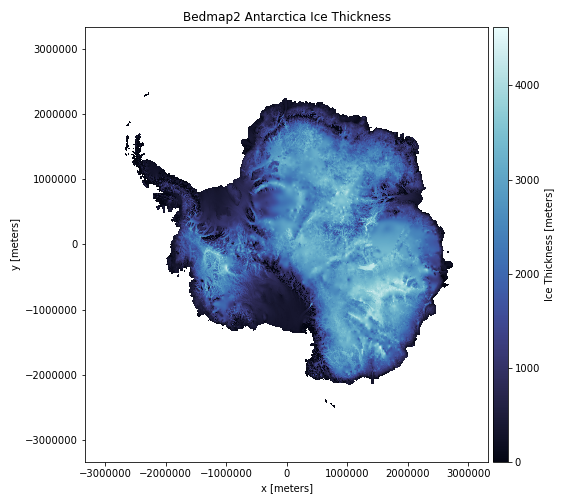
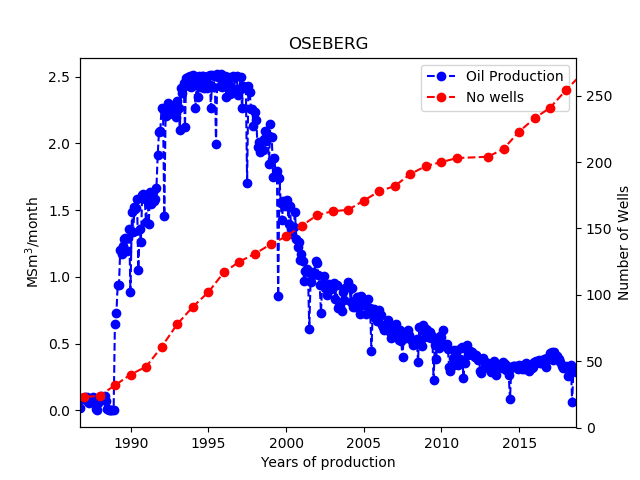
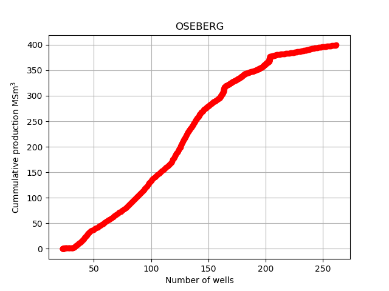

Exercise 1: Install Bedmap to visualize Antarctica ice data
Background
There is currently a great deal of concern about global warming. Some critical issues are whether we are more likely to observe extreme local temperatures, increased frequencies of natural disasters like forest fires and droughts, and if there are "tipping points" in the climate system that are, at least on the human timescale, irreversible [1]. One particular question to ask is: How much ice is likely to melt? And, what would be the consequence of ice melting for sea level rise (SLR)?
Since most of the ice on Planet Earth is located in Antarctica, substantial effort has been spent in mapping the ice and the bedrock of this continent. Most of the data is freely available, and we can use Python to investigate different scenarios. Here we will only show you how to install the packages and visualize the ice thickness.
Part 1.
The ice data are located in the bedmap2 dataset [2] The rockhound library can be used to load the data. As an aid to plotting, you might also want to use color maps from the cmocean package [3]. To install bedmap2 data you have to create a new conda environment (we call it ice)
conda config --add channels conda-forge
conda create -n ice python matplotlib numpy \
scipy xarray==0.19.0 pandas rockhound cmocean pip jupyter
Note that we need a specific version of the xarray library.
conda activate project1
jupyter notebook
Part 2. The code below is taken from the rockound library documentation:
import rockhound as rh
import matplotlib.pyplot as plt
import cmocean
import numpy as np
bedmap = rh.fetch_bedmap2(datasets=["thickness","surface","bed"])
plt.figure(figsize=(8, 7))
ax = plt.subplot(111)
bedmap.surface.plot.pcolormesh(ax=ax,cmap=cmocean.cm.ice,
cbar_kwargs=dict(pad=0.01, aspect=30))
plt.title("Bedmap2 Antarctica")
plt.tight_layout()
plt.show()
- Run the code and reproduce figure 1.
Figure 1: Visualization of the ice thickness in Antarctica.

- Check out the gallery. Choose one of the datasets, copy and paste the code and reproduce one of the figures in the gallery.
Exercise 2: Read data from file
As part of this project we will look at some of the datasets that are available at the Norwegian Offshore Directorate website.
In the following we will assume that you have a src directory containing all your Python code and a data folder inside your course folder. Thus, if you are in your src folder you can access files in the data folder by moving one folder up an down inside your data folder.
Pandas (easy):
Pandas will most likely be your first choice, because it has so much built in functionalities
- Run the following code and explain why the first
pd.read_csvfails or does not produce the output we want
import pandas as pd
df=pd.read_csv('../data/draugen.txt')
print(df)
df=pd.read_csv('../data/draugen.txt',sep='\t')
print(df)
- Print only the year column from
dfi) using the labelYearand ii)df.columns[0] - Print the column with oil equivalents
numpy.loadtxt (medium):
Numpy.loadtxt is a build in function in Numpy that reads tabulated data, it does not know what to do with a header line, and we need to tell it how many lines to skip
import numpy as np
data=np.loadtxt('../data/draugen.txt',skiprows=1)
- How can you print out only the year, month, etc. columns from the
datavariable? - Use
data=np.loadtxt('../data/draugen.txt',skiprows=1,unpack=True), what changes now?
Vanilla Python (hard):
When accessing files, it can be easy to forget to close the file after opening it. This can lead to problems as an open file, in many cases, cannot be accessed by other programs. To avoid this we use the with statement. The following code can be used to print out all the lines of a file, and Python will open and close the file for you
with open("../data/draugen.txt") as my_file:
for line in my_file:
print(line)
After the code is run, the variable line will still hold the last line of the file, which should be '2023\t10\t0.072419\t0.019985\t0\t0.092404\t1.005672\n'. The first two numbers are year (2023) and the month (10), for the rest check the header in the file. The \t means tabular and \n means a newline. In order to parse this line we need to pick out the numbers, the easiest way in Python is to split the line on \t, if you do
data_list=line.split('\t')
print(data_list)
we conveniently get all the elements separated by \t into a list (of strings). To convert a string to a number we can do e.g. float(data_list[0]).
- Modify the following code to extract year, month, and oil equivalents. Remember we need to skip the first header line, which contains only text.
year=[] # empty list
month=[] # empty list
oe=[] # empty list
read_first_line=False
with open("../data/draugen.txt") as my_file:
for line in my_file:
if read_first_line:
data_list=line.split('\t')
year.append(float(data_list[0]))
#same for month
#same for oil equivalents
read_first_line=True
Store the data in a dictionary (optional)
Tabulated data with a header is perfect for a dictionary, here we create a dictionary based on the header in the file.
data_dict={'year':[], 'month':[],'oil':[],'gas':[],'cond':[],'oe':[],'wat':[]}
- modify the code above to store all data in each line in the dictionary. To loop over all entries in the
data_dict, and the list elements indata_list, you can use thezipfunction
for key,data in zip(data_dict,data_list):
data_dict[key].append(float(data))
Exercise 3: Matplotlib visualization
To access the data a bit easier I have added a file draugen_pandas.py in the data folder containing our data as lists. We can access them by importing them directly into our script. However, as we are in the src folder it causes a practical problem to access a Python file in a different folder and the only way to do this is to add the data folder to our path
import sys
sys.path.append('../data/')
from draugen_data import year,month,oil,gas,wat,cond,oe
- Use matplotlib to plot oil equivalents,
oe, vs theyeardata, compare with the official data.
import matplotlib.pyplot as plt
plt.plot(#fill inn code)
Our plot looks a bit strange, because we do not take into account the month column. We need to create a new list e.g. year_month=year+month/12.
Convert list to Numpy arrays and plot (easy)
year_month=year+month/12 will not work for lists as Python does not understand what month/12 is, and even if it did the + operation would not give the expected results. But, if we convert our list to a Numpy array, life becomes easy.
- Use
year_month=np.array(year)+np.array(month)/12and create a new plot, withyear_monthon the x-axis. - Try to make the plot as similar as possible to figure 2
Figure 2:

Exercise 4: Use Pandas to visualize oil production data
When analyzing data it is very advantageous to start by making a plot. The human mind is usually good at detecting patterns, and by looking at the data one can test out ideas, before possibly doing a more comprehensive analysis.
As part of this project we will look at some of the datasets that are available at the Norwegian Petroleum Directorate (NPD) website.
Use functions to divide a problem into smaller pieces. Functions should not do too much, that increases the probability that they can be reused.
Part 1.
- Write a function that has the signature as indicated below, and returns a DataFrame containing data for all fields. It should return an empty DataFrame along with an error message if something went wrong.
Note: you can join strings by simply doing folder+datafile
def df_all_data(datafile='field_production_gross_monthly.xls',folder='../data/'):
'''
datafile: name (and path) to data file
returns DataFrame
'''
All data files needed for this project are located in the data folder.
- Write a function that take as argument the name of a field and returns a DataFrame with data from that specific field.
- The function should return an error message if the name cannot be found. As a help to the user one could also print out possible (unique) names that exists in the data file for the specific column.
df_fields=df_all_data()
def df_field(name,df_fields, col=0):
'''
name: name of field
df_fields: DataFrame with all field data
col: which column to test against to find field data
returns DataFrame
'''
- To check your code, open the file
field_production_gross_monthly.xls, and compare its contents with output from the commandprint(df_field('OSEBERG')).
Part 2.
Next, we wish to look at the historical oil production versus time for a specific field. Such plots are already available at the NPD website, but here you are going to make your own by using the matplotlib library, and Pandas.
- Start by extracting oil production data for a specific field with the function already defined in Part 1:
def plot_prod_data(name,df_fields,fluid='oil', pandas=True):
df = df_field(name,df_fields) # get DataFrame
# extract production data, and plot using matplotlib or the build in pandas
# functions
It will be much faster not to read the Excel file each time, read it once and pass the DataFrame to the function.
- Finish implementation of the code above, if
pandas=Trueit should make a plot using the Pandas library, and ifpandas=Falseit should make a plot using the Matplotlib library.
Calling plot_prod_data('OSEBERG') should generate a figure that looks
something like this:
Figure 3
Part 3. In the oil production plot for a given field, we additionally want to include information about the number of wells that have been drilled. Specifically, we wish to plot, on a separate \( y \)-axis, the cumulative number of wells present in the field at any given moment in time.
Well data is stored in the file wellbore_development_all.xlsx.
In this file, each row entry corresponds to a single well, and the
field to which it belongs is stored in the column with index 14.
Hence, we can start by writing:
df_wells=df_all_data(datafile=`wellbore_development_all.xlsx`)
def plot_prod_and_well_data(name,df_fields,df_wells):
df_w = df_field(name, df_wells, col=14)
year = df['Completed year']
...
- Note 1: you can choose to use Pandas or Matplotlib, pick the one that you find most practical.
- Note 2: the Excel file only tells you the year in which each well was completed; there could be many wells drilled in a given year, and the list is not sorted. This means that you need to a little more work to process the data
- Finish implementing the above Python function.
- Calling it with a specific field as input should generate a plot that looks something like this:
Figure 4

If you want, you can also distinguish between different types of wells, i.e., between injection/production/observation wells.
Exercise 5: More wells, more oil?
A very common statement is "more wells - more oil". The fields on the Norwegian Continental Shelf (NCS) are in different stages of production, and they have varying reservoir properties, so a thorough analysis would take time. However, we would at least expect to see some correlation between the total amount of oil produced and the number of wells drilled, if the hypothesis is correct.
Part 1 (OPTIONAL). So far we have plotted production or well data against time. To investigate relationships, we can also plot cumulative production vs cumulative number wells. We now have two time series i) production vs time and wells vs time, they have different lengths and to plot e.g. production vs wells, you have to have two time series at the same time. This can easily be achieved in Python by using numpy.interp.
Hint: the cumulative sum for a vector can be found using numpy.cumsum
- plot the cumulative production on the \( y \)-axis and cumulative number of wells on the \( x \)-axis. A successful plot would look something like:
Figure 5

Part 2. The first task is to fetch the (final) number of wells drilled for each field, as well as the total (cumulative) oil production.
- Create a Pandas DataFrame, one column with the field names, second column the total volumes produced, and the third column the total number of wells drilled for each field (if you like you can distinguish between producers, injectors and observation wells). Hence, there will only be one entry for each field.
Part 3.
- Make a scatter plot showing the cumulative oil production of all the fields on the \( y \)-axis. On the \( x \)-axis, plot the number of wells for the fields (you might want to exclude observation wells).
Part 4. The Draugen field is very homogeneous, and it is therefore regarded as an ideal field on the NCS. It also has an active aquifer underlying the reservoir, meaning that when producing oil by water injection the aquifer provides additional pressure support.
- Does the plot you made in Part 3 indicate that Draugen has been a successful field compared to the others? Why/why not?
(OPTIONAL)
- To help guide the eye you can also add a regression line, which you can do as follows (assuming data you want to fit a line to are stored in
xandyarrays)
from scipy import stats
slope, intercept, r_value, p_value, std_err= stats.linregress(x,y)
trendline = slope*np.array(x)+intercept
plt.plot(x,trendline, label=str("R value=")+str("{:.3f}".format(r_value)))
Bibliography
- V. Masson-Delmotte, P. Zhai, A. Pirani, S. L. Connors, C. Pean, S. Berger, N. Caud, Y. Chen, L. Goldfarb, M. I. Gomis, M. Huang, K. Leitzell, E. Lonnoy, J. B. R. Matthews, T. K. Maycock, T. Waterfield, O. Yelekci, R. Yu and B. Z. (eds.). Climate Change 2021: the Physical Science Basis. Contribution of Working Group I to the Sixth Assessment Report of the Intergovernmental Panel on Climate Change, Cambridge University Press. In Press., 2021.
- P. Fretwell, H. D. Pritchard, D. G. Vaughan, J. L. Bamber, N. E. Barrand, R. Bell, C. Bianchi, R. Bingham, D. D. Blankenship and G. Casassa. Bedmap2: Improved Ice Bed, Surface and Thickness Datasets for Antarctica, The Cryosphere, 7(1), pp. 375-393, 2013.
- K. M. Thyng, C. A. Greene, R. D. Hetland, H. M. Zimmerle and S. F. DiMarco. True Colors of Oceanography: Guidelines for Effective and Accurate Colormap Selection, Oceanography, 29(3), pp. 9-13, 2016.